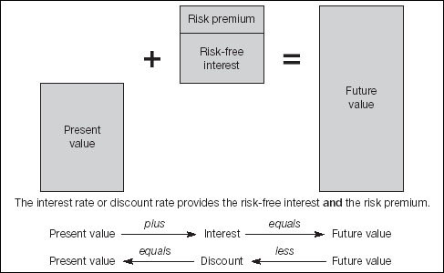

If in an uncharacteristic fit of generosity, your accountant offered you a $100 bonus and told you that you could choose whether to take it today or in one year’s time – no strings attached – which would you choose? Obviously, you would grab it now with both hands. You do not need telling twice that money in your possession now is worth somewhat more than the promise of the same amount at some future time. There are two main reasons.
If interest rates have risen from 10% to 12% they have increased by two percentage points – or by 20%. The first is a unit, the second is a rate of change. Bankers, who often make money by taking advantage of very small changes in interest rates, refer to 1% as 100 basis points. For example, half a per cent is 50 basis points.
Interest. If you took $100 today and put it in the bank at 5% interest, you would be $5 better off in a year’s time (100 × 0.05), compared to waiting for the cash. Accordingly, you might argue that you would want a promise of considerably more than $105 in a year’s time to make it worth the risk of foregoing the cash handout today.
If you can see the logic of these two points, you are up to speed with everything there is to know about the concept of dealing with problems involving money, risk and time. Should you buy or lease? Is it worth paying a bill early for the discount? How do you compare two projects with differing terms or rates of return? The answers to all the questions and more are found by the same logic – the linking factor is the rate of interest. I will explain more about this in a moment.
If you make the bold but generally acceptable assumption that a bank account is a completely safe place to put your money, then obviously the return on everything you do in business should be greater than the rate of interest you would earn from the bank. Otherwise, you would grow richer by putting your money on deposit and sitting on the beach. Moreover, the return from a business venture should not just equal, but should be significantly greater than, the rate of bank interest – otherwise the deal is simply not worth the risk.
‘Money often costs too much.’
—Ralph Waldo Emerson
Beanies deploy three bits of jargon to describe the relationships between money and interest rates. Taking the figures from the previous example:
Present value is money in your hand today (e.g. $100).
Future value is the worth of some amount in the future ($105).
The interest rate or discount rate links the two (5%).
Interest rates and discount rates are the same thing with different names.
As with most financial analysis, if you know two of these things you can work out the third. The relationship is as follows. It helps to understand this, but do not get too hung up on it because there are spreadsheet formulas to do the sums.
Future value = present value × interest rate
$105 = $100 × 1.05
Note how the interest rate is represented as a proportion, as discussed above. This is exactly the same arithmetic as the sales tax discussed above. Now, suppose we are dealing with more than one year. You will know from growth rates, above, that you multiply out by the interest payments. For example, for two years, the arithmetic is:
FV = $100 × 1.05 × 1.05
= $100 × 1.1025
= $110.25

You can, of course, use the spreadsheet POWER function which we met above. However, as you guessed, spreadsheets have three specific functions built-in. You get at them by choosing Insert/Function and then clicking on Financial. They are PV, FV and RATE. I am sure you can work out which is which. Figure 6.1 shows them in use. It also includes an example (worked out the long way) of $100 invested at 5% pa interest for 20 years. A couple of things need explaining.
Present and future value calculations assume that there are flows in both directions. In other words, $100 flows out of your grasp at the beginning and $265.33 flows back in at the end. For this reason, the present value is entered as a negative amount. If you were borrowing, the initial value would be positive and the future value would be negative. It makes no difference to the numbers. The amounts and rates are the same whether you look at a transaction from the point of view of the lender or the borrower.